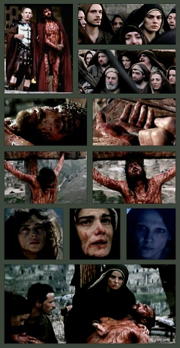

 Imágenes de La pasión, la película que está filmando Mel Gibson y que tanto está dando que hablar.
Armé esto a partir del trailer (es digno de ver; pero, ojo: son 23.7 Mbytes).
En orden, vendríamos a tener:
Es poco para juzgar, pero pareciera que Mel Gibson se
va a salir con la suya, nomás
(artísticamente hablando).
Ojalá.
P.S. (marzo 2004): ...y parece que se salió, nomas. Y no sólo artísticamente hablando.
Acá puse unas imágenes como para fondo de pantalla (desktop Windows).
Sigo con lo de Malcom Muggeridge, de su librito de 1970 sobre la Madre Teresa de Calcuta (recordar que entonces la Madre era prácticamente desconocida; él en cambio era muy popular en su país, como periodista; ni católico ni piadoso precisamente).
-
...Sé que la madre Teresa no puede comprender los problemas y las dudas
que me impiden adoptar su punto de vista acerca de la orientación
actual de la Iglesia y considerarla de otro modo que como una
institución con una jerarquía y un clero mortal, con su poder de
hacer y deshacer, de mantenerse o de dejarse hundir...
-
...
para mí como una especie de tentación dejarme llevar por ella para
entrar en la iglesia, únicamente porque ella lo desea. Pero sé que
sería un error.
Simone Weil se encontró en un caso
semejante cara a cara con el padre Perrin, y en una serie de cartas
que ella le dirigió (y que se encuentran en su
libro Espera de Dios) explica con una lucidez
que yo no podría igualar, las razones
por las cuales le parece a ella que «la voluntad de Dios no es que
ahora precisamente entre yo en la iglesia».
Al mismo tiempo se
conforta añadiendo : «si la voluntad de Dios es que yo entre en la
iglesia, me impondrá esta voluntad en el momento preciso en que yo
la merezca».
Y más adelante:
«...yo no puedo dejar de preguntarme si, en este
tiempo en el que gran parte de la humanidad está tan sumergida en el
materialismo, Dios no querrá que haya hombres y mujeres que estando
del todo entregados a él y a Cristo, sigan sin embargo permaneciendo
fuera de la iglesia».
Confieso que me hago la misma pregunta.
Lo que es más difícil de hacer comprender es la gana que se tiene de
pertenecer a la Iglesia; y cómo siente uno verdadera envidia de los
amigos, cuando suena la campana que llama a misa. ¡Cuántas veces he
observado con atención -particularmente en Francia- a las ancianas
vestidas de negro y con su cara arrugadita, llevando en su mano el
misal; los niños endomingados, los padres silenciosos y las mujeres
luciendo su mantilla negra! ¡Qué alegría poder contarse entre ellos!
Y arrodillarse con ellos, y avanzar con ellos hacia el altar, y a su
lado recibir entre los labios el cuerpo de Cristo. Y después el
canto del coro, la luz que tiembla en las velas, las palabras tan
solemnes como familiares, el humo del incienso.
De todos los móviles
que unen a los hombres (la exaltación, la avidez, la
curiosidad, la bajeza, el odio) solamente la adoración a Dios les
constituye en familia; en ella se termina con las diferencias de
clase, de raza, de fortuna y de talento. Todos juntos se postran
ante el padre del cielo y su hijo encarnado; confiesan sus faltas, y
se llenan de esperanza y encuentran en la espléndida perspectiva que
se les abre desde la eternidad, su morada para siempre y la energía
para vivir una nueva jornada en esta vida efímera y mortal.
Entonces ¿por qué? Porque para mí sería deshonesto y porque no
podemos, querida madre Teresa, comprar la fe -y la fe menos que
nada- por motivos artificiales.
Sé perfectamente que cualquiera que
sea mi deseo de que la cosa sea de otro modo,
la campana no suena para mí.
Y que no hay sitio para mí en el comulgatorio.
Yo sería,
también entonces, un paria.
La Iglesia, después de todo, es una
institución que tiene una historia; un pasado y un porvenir. Ella
hizo las cruzadas, incluso la inquisición, entronizó papas
escandalosos, y cometió monstruosas injusticias. En lo que respecta
a la institución, todo ello es perfectamente comprensible, y aún a
nivel humano, hasta excusable. Pero desde la lugartenencia de Dios
en la tierra, todo ello como perteneciente no sólo a la historia
sino a la eterna verdad, no es defendible. Por lo menos para mí.
[...]
Sé que todo esto apenas impresionará a la madre Teresa, cuya
sumisión a la Iglesia está situada en otro plano, puesto que arranca
del amor a Dios y al prójimo enseñado por Cristo, amor que vive
hasta sus últimas consecuencias: el servicio a los más pobres de los
pobres. Todo lo que yo entonces puedo decir, en cuanto a mí, es que
si algún día se me ocurriese con toda evidencia que yo podía, dentro
de la honestidad y verdad debidas, entrar en la Iglesia, yo me
precipitaría hacia ella con tanta impaciencia y alegría que la madre
Teresa se regocijaría.
Y vuelvo a citar a Simone Weil:
- «Quizá mi vida terminará sin que yo haya tenido tal impulso. Pero
algo es absolutamente cierto. Y es que si llega el día en el que yo
ame suficientemente a Dios para merecer la gracia del bautismo,
recibiré tal gracia ese mismo día, sin duda alguna y en la forma en
que Dios quiera, sea por medio de un bautismo propiamente tal, sea
de otra manera. ¿Por qué, pues, he de preocuparme? No es de mi
incumbencia pensar en mí. Mi asunto es pensar en Dios. Es Dios quien
tiene que pensar en mí.».
Así pues, de mi implícito diálogo con la madre Teresa concluyo que,
desde toda honestidad, no buscaré ser recibido en la Iglesia; ni
siquiera para darle gusto a ella, siendo así que por ella yo daría
cualquier cosa.
De todos modos es muy probable que un
candidato tan contestatario y molesto como yo, no vendría
a resultar muy agradable...
-
It is with resignation and a touch of sadness that I realize that I will never, in my lifetime, be able to read all the books I own.
Y recuerdo el caso de Menéndez y Pelayo, ese sí era bibliófilo en serio;
según creo recordar haber leido, sus últimas palabras
fueron:
"Lástima tener que morirme... con tantos libros que me quedan por leer !".
 Esta Madonna es un esbozo de Miguel Angel, no muy conocido.
Esta Madonna es un esbozo de Miguel Angel, no muy conocido. Yo al menos no lo conocía, hasta que lo busqué a cuento de un comentario de Adrienne von Speyr, que alude a la -rara- "mirada esquiva" de la Virgen:
¿Por qué no está mirando a su hijo ? Qué está mirando ?
von Speyr hace una interpretación bastante particular : dice -o imagina- que la Virgen está mirando a la humanidad, como agradeciendo, porque el pecado de los hombres (felix culpa) al fin y al cabo ha sido lo que le dado a Ella la posibilidad y la gracia de ser la Madre de Dios.
Un poco traído de los pelos, para mi gusto... pero vaya a saber.
El comentarista de la página tira su interpretación, algo más
convencional: la Virgen estaría contemplando el futuro, los sufrimientos
de su hijo (antipando los misterios dolorosos, digamos).
Tampoco me convence demasiado (aunque hay otra obra
de Miguel Angel, el relieve de la Madonna de la Scala, en pose similar). Igual, yo tiendo
-el cinismo del ignorante, probablemente-
a desconfiar de interpretaciones religiosas, sobre todo en referencia a
Miguel Angel... Me parece que se trata de simple estética: la pose con el cuello
girado, mostrando el perfil opuesto al del cuerpo, se ve "pictórica";
se me hace cuesta arriba creer que Miguel Angel estaba
tenía pensamientos religiosos, en ese momento.
Pero, nuevamente, vaya a saber...
Por otro lado, y como curiosidad adicional: si uno se fija con cuidado en el dibujo, arriba de la cabeza del niño puede ver un esbozo del perfil de la Virgen (nariz y boca), en lo que parece ser un primer borrador, en la pose más tradicional.
Dice Speyr:
-
Dado que solo puedo amar, os miro a vosotros, pecadores,
y lo único que sé del nacimiento de mi Hijo
es que lo debo a vosotros; y en eso no miro
mi camino, tampoco miro el sufrimiento, sino el camino
que El va haciendo hacia nosotros.
Sin vuestros pecados no hubiera podido pronunciar
el "Fiat", y me hubiera quedado sin El; por eso,
por causa de El, puedo apartar mi mirada
y miraros a vosotros agradecida, y de esta
manera entregarlo a vosotros y al Padre, y
así la palabra será cumplida.
"The Lord of the Rings / is one of those things: / If you like it, you do; if you don't, you boo!", decía Tolkien.
Bueno, salvando las distancias... y obviando el detalle de que se trata de sólo dos votos en más un año, haber ligado justamente -y solamente- un diez y un uno no deja de causarme alguna módica satisfacción.
PS: Ya no, como hubiera debido prever al poner el link... Se agradece, de todas formas.
- Ya viejo,
Swift fue recogido en el hospicio de dementes
que él mismo había fundado en su juventud.
Dicen que allí se quedaba a menudo delante de un espejo,
con la perseverancia de una mujer vana y voluptuosa,
pero con pensamientos bastante diferentes.
Se miraba y decía : "Pobre viejo! ".
Había una vez un padre y un hijo.
Un hijo es como un espejo en el cual
el padre se mira; y para el hijo,
a su vez, el padre
es como un espejo donde
él se ve tal como será en el futuro.
Pero ellos raramente se miraban así;
su trato cotidiano estaba animado
por la alegría de una conversación despreocupada.
Sólo que en algunas ocasiones el padre se detenía, el rostro
triste, ante el hijo, lo miraba y decía :
"Pobre muchacho,
vives en una quieta desesperación".
Nada más se decían al respecto: ni cómo había que entender éso,
ni cuán verdadero era. El padre se creía responsable
por la melacolía del hijo, y el hijo se creía culpable
de haber causado el dolor de su padre; pero de
esto no hablaban una palabra.
Y entonces el padre murió.
Y el hijo vio, escuchó y vivió muchas cosas,
y fue probado por diversas tentaciones;
pero sólo una cosa echaba de menos,
sólo una cosa lo conmovía: era esa frase,
y la voz del padre cuando la pronunciaba.
Después el hijo se hizo viejo a su vez;
pero así como el amor crea todo lo que ama,
así el recuerdo y la añoranza le enseñaron -
no ciertamente a arrancar algún informe a
la eternidad, sino a imitar la voz de su padre
a la perfección.
El no se miraba en un espejo, como el viejo Swift,
pues ya no había espejo; pero en la soledad
se confortaba escuchando la voz de su padre:
"Pobre muchacho,
vives en una quieta desesperación".
Pues el padre era el único que lo había entendido;
y el padre había sido su único confidente;
y la intimidad era tal que la muerte no había
podido interrumpirla.
Soren Kierkegaard - Culpable - No culpable ? [*]
-
Entró a mi habitación y me dijo:
— Pobre desdichada, que no sabes nada y no entiendes nada. Ven conmigo y yo te enseñaré cosas que ni siquiera puedes imaginar.
Lo seguí.
Me condujo a una iglesia. Era nueva, y fea.
Me hizo caminar hasta el altar, y me ordenó:
— De rodillas.
— No estoy bautizada, le dije.
— Cae de rodillas ante este lugar, con amor, como
ante el lugar donde está la verdad.
Obedecí.
Me llevó fuera de la iglesia, y subimos a un altillo.
Era un cuarto con una ventana abierta desde la cual
se veía toda la ciudad, algunos andamios de madera,
y el río con los barcos descargando.
Me hizo sentar.
Estábamos solos.
El hablaba.
A veces alguien entraba, se unía a la conversación
y luego se iba.
Ya no era invierno. Aún no era primavera.
Las ramas de los árboles estaban desnudas, sin brotes,
y el aire era frío y pleno de sol.
La luz brillaba, crecía radiante, se apagaba;
luego las estrellas y la luna aparecían en la ventana.
A veces él interrumpía su conversación, abría la alacena
y sacaba un trozo de pan, que compartía conmigo.
Aquel pan sabía a pan verdadero.
Nunca después
volví a encontrar ese sabor.
Me sirvió y se sirvió un vino que sabía a sol y a la tierra
que cimenta esta ciudad.
A veces nos recostábamos sobre el piso,
y la dulzura del sueño caía sobre mí.
El había prometido enseñarme algo, pero no me enseñó nada.
Conversábamos de todo un poco, en forma casual, sin orden,
como viejos amigos.
Un día me dijo:
— Ahora, vete.
Me puse de rodillas y abracé sus piernas, rogándole
que no me echara. Pero me echó escaleras abajo.
Descendí sin saber nada, con el corazón roto en pedazos.
Caminé las calles.
Luego advertí que no conocía en absoluto la dirección de aquella casa.
Nunca traté de encontrarla.
Comprendí que él me había venido a buscar por error.
Mi lugar no está en aquel altillo.
Está en cualquier parte,
en la celda de un cárcel, en un salón burgués lleno
de adornos y de terciopelo rojo, en la sala de espera
de una estación; pero no en aquel altillo.
Algunas veces no puedo dejar de repetir, con temor y remordimiento,
algunas de las cosas que me dijo.
¿Cómo puedo saber si las recuerdo bien ?
El no está aquí para decírmelo.
Sé muy bien que él no me quiere.
¿Cómo podría quererme ?
Y aun en el fondo, alguna parte de mí misma
tiembla de miedo, y no puede dejar de pensar que quizás,
a pesar de todo, me quiere.
Simone Weil